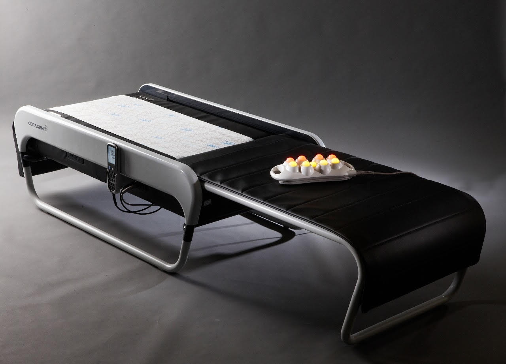

CERAGEM es una empresa establecida en 1998, con sus cimientos en Corea del Sur.
Actualmente somos el proveedor más grande de termo masajeador de alta calidad.
Los cementos de CERAGEM están localizados en más de 74 países en todo el mundo, íncluyendo EEUU, China,
Alemania, Chile, Turquía, Rusia y varios países del Medio Orient, con el fin de llevar salud a todas las
familias del mundo.

Características y ventajas
Por primera vez, los productos termomasajeadores, realizan las mediciones de longitud
de la columna vertebral y se ajusta a las curvas, permitiendo realizar individualmente la terapia,
según la medida y características de cada cuerpo.
Una vez que el equipo detecta la columna vertebral, se estimula de forma individual los puntos
de acupuntura de los meridianos 30P, puntos diferentes(30p) desde las cervicales hasta los caudales.
Con las mediciones de longitudes y curvaturas de la columna vertebral de los usuarios, los puntos
meridianos de acupuntura se estimulan, masajeando la columna y a su vez, mejorando el metabolismo del cuerpo.